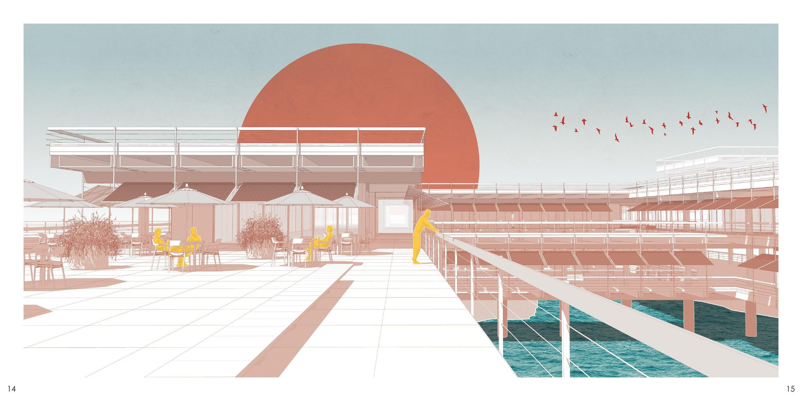
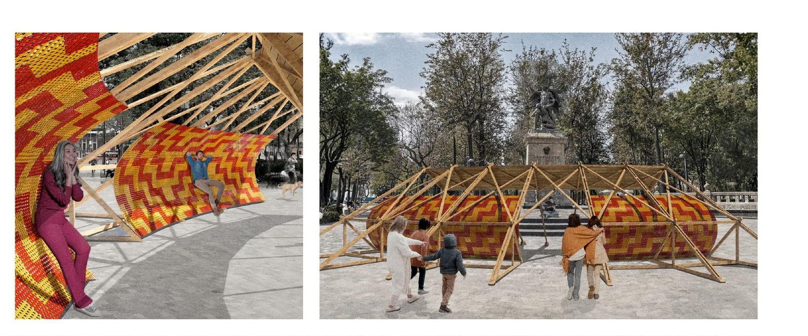
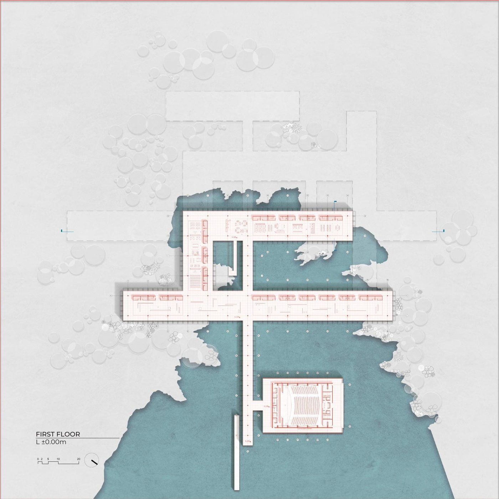
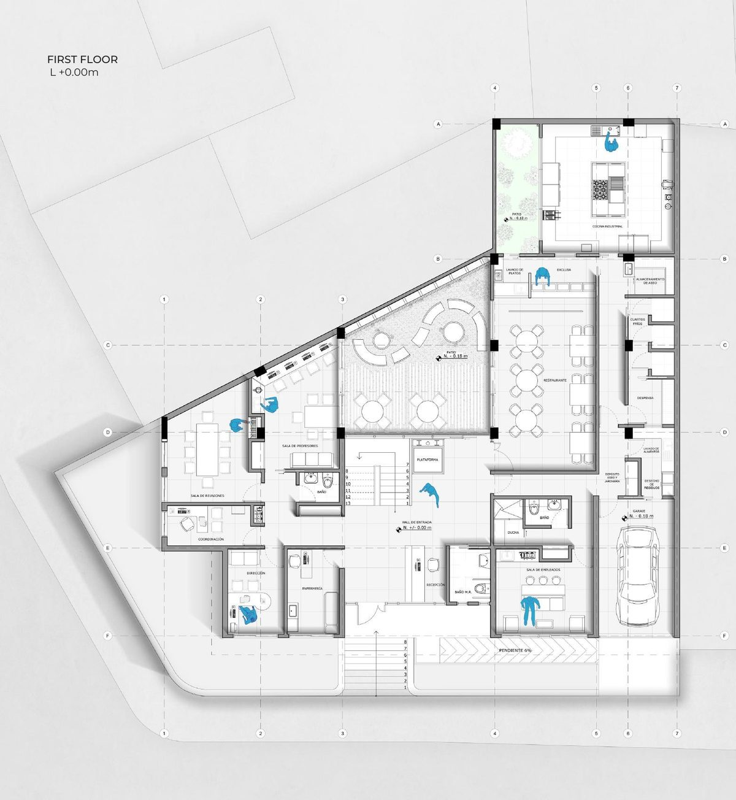
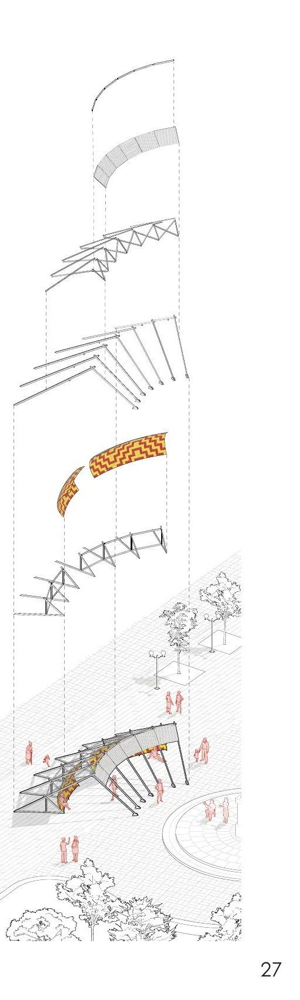
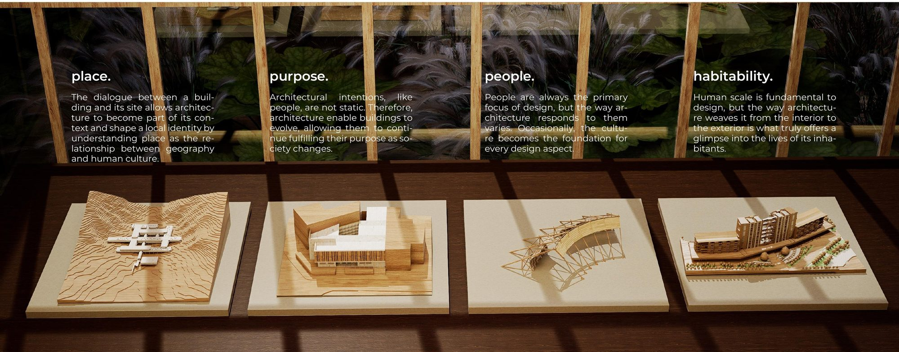

Genova's Habitability Desplazar
Trabajo
Del render a la planta, la misma idea contada dos veces.
Visualización arquitectónica





Planos arquitectónicos




Selección de proyectos
Cuatro maquetas, cuatro formas de habitar.
Tocá cada punto para ver el proyecto y entrar al detalle completo.

3 de 4 proyectos disponibles — Enea's Complex se publica próximamente.
Próximamente — proyectos de urbanismo.
Próximamente — flipbook del portafolio completo.